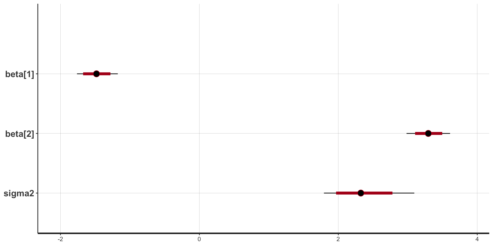
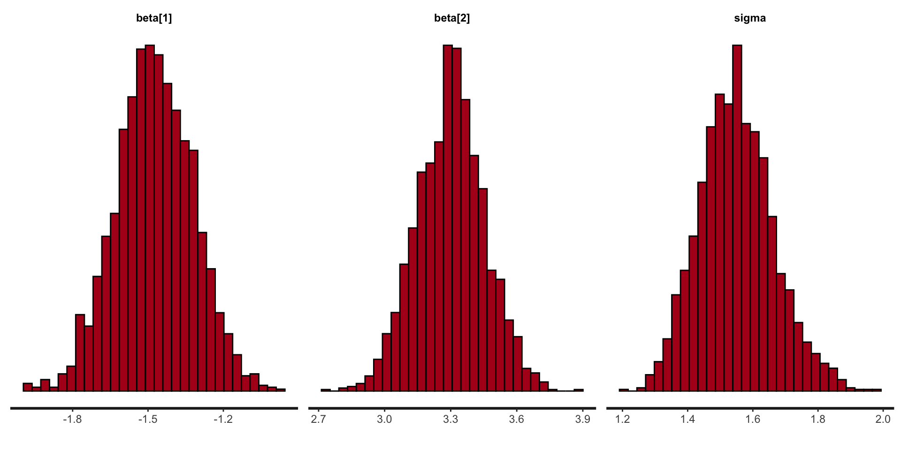

data {
real Y[10]; // height for 10 people
}
parameters {
real mu;
real<lower = 0> sigma2;
}
model {
Y ~ normal(mu, sqrt(sigma2)); // likelihood
mu ~ normal(0, 1); // prior for mu
sigma2 ~ inv_gamma(1, 1); // prior for sigma
}Probabilistic Programming (Intro to Stan!)
Review of last lecture
On Thursday, we performed posterior inference for Bayesian linear regression using Gibbs and Metropolis sampling.
We obtained correlated samples from the posterior using MCMC.
Gibbs required a lot math!
Metropolis required tuning!
Today we will introduce Stan, a probabilistic programming language that uses Hamiltonian Monte Carlo to perform general Bayesian inference.
Learning objectives
By the end of this lecture you should:
Know how to start coding up a model in Stan.
Appreciate how easy Stan makes things for us compared to coding up the algorithm ourselves.
Be able to fit a basic linear regression in Stan.
What is Stan and how do we use it?
Stan is an intuitive yet sophisticated programming language that does the hard work for us.
Programming language like R, Python, Matlab, C++…
Works like most other languages: can use loops, conditional statements, and functions.
Code up a model in Stan and then it implements HMC (actually something called NUTS) for us.
Why should we use Stan?
Stan is the brainchild of Andrew Gelman at Colombia.
Stan uses an extension of HMC called NUTS that automatically tunes. It is fast.
Stan is simple to learn.
Stan has excellent documentation (a manual full of extensive examples).
Most important: Stan has a very active and helpful user forum and development team; for example, typical question answered in less than a couple of hours.
How do we use it?
Code up model in Stan code in a text editor and save as .stan file.
Call Stan to run the model from:
- R, python, the command line, Matlab, Stata, Julia
Use one of the above to analyse the data (of course you can export to another one).
A straightforward example
Suppose:
We record the height, \(Y_i\), of 10 people.
We want a model to explain the variation, and choose a normal likelihood: \[Y_i \sim N(\mu, \sigma^2)\]
We choose the following (independent) priors on each parameter:
- \(\mu \sim N(0, 1)\)
- \(\sigma^2 \sim IG(1, 1)\)
Question: how do we code this up in Stan?
An example Stan program
An example Stan program: data block
data {
real Y[10]; // height for 10 people
}Declare all data that you will pass to Stan to estimate your model.
Terminate all statements with a semi-colon
;.Use
##or//for comments.
An example Stan program: data block
data {
real Y[10]; // height for 10 people
}We need to tell Stan the type of data variable. For example:
realfor continuous data.intfor discrete data.Arrays: above we specified
Yas an array of continuous data of length 10.
An example Stan program: data block
data {
real Y[10]; // height for 10 people
}Can place limits on data, for example:
real<lower = 0, upper = 1> X;real<lower = 0> Z;
Vectors and matrices; only contain reals and can be used for matrix operations.
real Y[10]; // array representation
vector[10] Y; // vector representationAn example Stan program: parameter block
parameters {
real mu;
real<lower = 0> sigma2;
}Declare all parameters that you use in your model.
Place limits on variables, for example:
real<lower = 0> sigma2
A multitude of parameter types including some of the aforementioned:
realfor continuous parameters.Arrays of types, for example
real beta[10]
An example Stan program: parameter block
parameters {
real mu;
real<lower = 0> sigma2;
}vectorormatrix, specified by:vector[5] betamatrix[5, 3] gamma
simplexfor a parameter vector that must sum to 1.More exotic types like
corr_matrix, orordered.
An example Stan program: parameter block
parameters {
real mu;
real<lower = 0> sigma2;
}Important: Stan is not developed yet to work with discrete parameters. Options for discrete parameters in Stan:
- Marginalize out the parameter. For example, suppose we have \(f(\boldsymbol{\beta}, \theta)\), where \(\boldsymbol{\beta}\) is continuous and \(\theta\) is discrete:
\(f(\boldsymbol{\beta}) = \sum_{i = 1}^K f(\boldsymbol{\beta}, \theta_i)\)
- Some models can be reformulated without discrete parameters.
An example Stan program: model block
model {
Y ~ normal(mu, sqrt(sigma2)); // likelihood
mu ~ normal(0, 1); // prior for mu
sigma2 ~ inv_gamma(1, 1); // prior for sigma2
}Used to define:
Likelihood.
Priors on parameters.
If don’t specify priors on parameters Stan assumes you are using flat priors (which can be improper).
An example Stan program: model block
model {
Y ~ normal(mu, sqrt(sigma2)); // likelihood
mu ~ normal(0, 1); // prior for mu
sigma2 ~ inv_gamma(1, 1); // prior for sigma2
}Huge range of probability distributions covered, across a range of parameterizations. For example:
Discrete: Bernoulli, binomial, Poisson, beta-binomial, negative-binomial, categorical, multinomial.
Continuous unbounded: normal, skew-normal, student-t, Cauchy, logistic.
An example Stan program: model block
model {
Y ~ normal(mu, sqrt(sigma2)); // likelihood
mu ~ normal(0, 1); // prior for mu
sigma2 ~ inv_gamma(1, 1); // prior for sigma2
}Continuous bounded: uniform, beta, log-normal, exponential, gamma, chi-squared, inverse-chi-squared, Weibull, Wiener diffusion, Pareto.
Multivariate continuous: normal, student-t, Gaussian process.
Exotics: Dirichlet, LKJ correlation distribution, Wishart and its inverse, Von-Mises.
Running Stan
Write model in a text editing program and save as a .stan file.
- To create a
.stanfile from RStudio,File -> New File -> Stan File.
###Load packages
library(rstan)
###Generate fake data
Y <- rnorm(10, mean = 0, sd = 1)
###Compile and run model, and save in fit
fit <- stan(file = 'straightforward.stan', data = list(Y = Y),
iter = 1000, chains = 4, seed = 1)Running Stan on example model
###Compile and run model, and save in fit
fit <- stan(file = 'straightforward.stan', data = list(Y = Y),
iter = 1000, chains = 4, seed = 1)The above R code runs NUTS for our model with the following options:
\(S=1,000\) MCMC samples of which 500 are discarded as warm-up.
Across 4 chains.
Using a random number seed of 1 (good to ensure you can reproduce results).
Example model: results
###Print summary statistics
print(fit, probs = c(0.25, 0.5, 0.75))Inference for Stan model: anon_model.
4 chains, each with iter=1000; warmup=500; thin=1;
post-warmup draws per chain=500, total post-warmup draws=2000.
mean se_mean sd 25% 50% 75% n_eff Rhat
mu -0.45 0.01 0.32 -0.66 -0.46 -0.26 1361 1
sigma2 1.23 0.02 0.62 0.81 1.09 1.48 865 1
lp__ -6.80 0.04 1.03 -7.21 -6.49 -6.06 808 1
Samples were drawn using NUTS(diag_e) at Tue Jan 21 14:36:33 2025.
For each parameter, n_eff is a crude measure of effective sample size,
and Rhat is the potential scale reduction factor on split chains (at
convergence, Rhat=1).Example model: results
###Extract posterior samples
pars <- extract(fit)
class(pars)[1] "list"names(pars)[1] "mu" "sigma2" "lp__" ###Extract samples for particular parameters
pars <- extract(fit, pars = "mu")
class(pars$mu)[1] "array"dim(pars$mu)[1] 2000Visualize posterior
###Extract samples for particular parameters
library(ggplot2)
data.frame(mu = pars$mu) |>
ggplot(aes(x = mu)) +
geom_histogram() +
labs(x = expression(mu), y = "Count",
subtitle = bquote("Posterior distribution for " ~ mu))
Quick note: what does \(\sim\) mean?
model {
Y ~ normal(mu, sigma); // likelihood
mu ~ normal(0, 1); // prior for mu
sigma ~ inv_gamma(1, 1); // prior for sigma
}\(\sim\) doesn’t mean sampling, although often times it can be thought of as sampling
MCMC/HMC makes use of the log-posterior
\[\log f(\boldsymbol{\theta} | \mathbf{Y}) \propto \log f(\boldsymbol{\theta}) + \sum_{i=1}^n \log f({Y}_i | \boldsymbol{\theta})\]
As such \(\sim\) really means increment log probability
All we have to do in Stan is specify the log-posterior!
Alternate way of specifying Stan models
model {
target += normal_lpdf(Y | mu, sqrt(sigma2)); // likelihood
target += normal_lpdf(mu | 0, 1); // prior for mu
target += inv_gamma_lpdf(sigma2 | 1, 1); // prior for sigma
}targetis a not a variable, but a special object that represents incremental log probability.targetis initialized to zero.normal_lpdfis the log of the normal density ofygiven locationmuand scalesigma:
target += std_normal_lpdf(mu) // prior for mu using standard normalLinear regression using Stan: data and parameter chunks
data {
int<lower = 1> n; // number of observations
int<lower = 1> p; // number of covariates
vector[n] Y; // outcome vector
matrix[n, p + 1] X; // covariate vector
real beta0; // location hyperparameter for beta
real<lower = 0> sigma_beta; // scale hyperparameter for beta
real<lower = 0> a; // shape hyperparameter for sigma2
real<lower = 0> b; // scale hyperparameter for sigma2
}
parameters {
vector[p + 1] beta;
real<lower = 0> sigma2;
}Linear regression using Stan: model chunk
model {
for (i in 1:n) {
target += normal_lpdf(Y[i] | X[i, ] * beta, sqrt(sigma2)); // likelihood
}
target += normal_lpdf(beta | beta0, sigma_beta); // prior for beta
target += inv_gamma_lpdf(sigma2 | a, b); // prior for sigma2
}Linear regression using Stan: vectorization
It is always a good idea to vectorize Stan code for faster and more efficient inference
model {
target += normal_lpdf(Y | X * beta, sqrt(sigma2)); // likelihood
target += normal_lpdf(beta | beta0, sigma_beta); // prior for beta
target += inv_gamma_lpdf(sigma2 | a, b); // prior for sigma2
}Linear regression using Stan
// saved in linear_regression.stan
data {
int<lower = 1> n; // number of observations
int<lower = 1> p; // number of covariates
vector[n] Y; // outcome vector
matrix[n, p + 1] X; // covariate vector
real beta0; // location hyperparameter for beta
real<lower = 0> sigma_beta; // scale hyperparameter for beta
real<lower = 0> a; // shape hyperparameter for sigma2
real<lower = 0> b; // scale hyperparameter for sigma2
}
parameters {
vector[p + 1] beta;
real<lower = 0> sigma2;
}
model {
target += normal_lpdf(Y | X * beta, sqrt(sigma2)); // likelihood
target += normal_lpdf(beta | beta0, sigma_beta); // prior for beta
target += inv_gamma_lpdf(sigma2 | a, b); // prior for sigma2
}Let’s simulate some data again
###True parameters
sigma <- 1.5 # true measurement error
beta <- matrix(c(-1.5, 3), ncol = 1) # true beta
###Simulation settings
n <- 100 # number of observations
p <- length(beta) - 1 # number of covariates
###Simulate data
set.seed(54) # set seed
X <- cbind(1, matrix(rnorm(n * p), ncol = p))
Y <- as.numeric(X %*% beta + rnorm(n, 0, sigma))Fit linear regression using Stan
###Load packages
library(rstan)
###Create stan data object
stan_data <- list(n = n,
p = p,
Y = Y,
X = X,
beta0 = 0,
sigma_beta = 10,
a = 3,
b = 1)
###Compile model separately
stan_model <- stan_model(file = "linear_regression.stan")
###Run model and save
fit <- sampling(stan_model, data = stan_data,
chains = 4, iter = 1000)
saveRDS(fit, file = "linear_regression_fit.rds")Example model: results
###Print summary statistics
print(fit, probs = c(0.25, 0.5, 0.75))Inference for Stan model: anon_model.
4 chains, each with iter=1000; warmup=500; thin=1;
post-warmup draws per chain=500, total post-warmup draws=2000.
mean se_mean sd 25% 50% 75% n_eff Rhat
beta[1] -1.48 0.00 0.15 -1.58 -1.48 -1.37 1951 1
beta[2] 3.30 0.00 0.15 3.20 3.30 3.40 1674 1
sigma2 2.35 0.01 0.33 2.12 2.32 2.55 1679 1
lp__ -196.98 0.04 1.29 -197.58 -196.63 -196.04 899 1
Samples were drawn using NUTS(diag_e) at Tue Jan 21 14:38:36 2025.
For each parameter, n_eff is a crude measure of effective sample size,
and Rhat is the potential scale reduction factor on split chains (at
convergence, Rhat=1).Stan plots: point estimate and intervals
stan_plot(fit, pars = c("beta", "sigma2"), include_warmup = FALSE,
point_est = "median", ci_level = 0.8, outer_level = 0.95)
Stan plots: histogram
stan_hist(fit)
Stan plots: density
stan_dens(fit)
Stan: a few of the loops and conditions
Stan has pretty much the full range of language constructs to allow pretty much any model to be coded.
for (i in 1:10) {something;}
while (i > 1) {something;}
if (i > 1) {something 1;}
else if (i == 0) {something2;}
else {something 3;}
Stan speed concerns
While Stan is fast it pays to know the importance of each code block for efficiency.
data: called once at beginning of execution.
transformed data: called once at beginning of execution.
parameters: every log probability evaluation!
transformed parameters: every log probability evaluation!
model: every log probability evaluation!
generated quantities: once per sample.
functions: how many times it is called depends on the function’s nature.
Stan in parallel
In R can run chains in parallel easily using:
library(rstan)
options(mc.cores = 8)Stan summary
Stan works by default with a HMC-like algorithm called NUTS.
The Stan language is similar in nature to other common languages with loops, conditional statements and user-definable functions (didn’t cover here).
Stan makes life easier for us than coding up the MCMC algorithms ourselves.
R packages that interface with Stan
rstan,brms,cmdstanr,rstanarmrstanandcmdstanryou write the Stan code, which gives you the most options.rstanhas a more intuitive user interface.cmdstanris more memory efficient and a lightweight interface to Stan.
rstanarmandbrmsyou don’t need to write the Stan code yourself, which makes it easier to use Stan, but is limiting.rstanarm’s biggest advantage is that the models are pre-compiled, but this is also it’s biggest limitation.brmswrites Stan code on the fly, so has many more models, some that are pretty advanced.
Prepare for next class
Work on HW 01 which is due January 30
Complete reading to prepare for next Thursday’s lecture
Thursday’s lecture: Priors, Posteriors, and PPDs!